Octubre 2024
Se creó un modelo de macetas de 80 mm, complementándolo con la fabricación de sus bases, empaques y bolsas para su transporte, todo ello con una identidad gráfica. Para llevar a cabo el proyecto, se empleó maquinaria para las bases de madera, así como modelado e impresión 3D para crear los moldes en los que se fabricarían macetas de batbotina. También se efectuó serigrafía en textil y cartón, y se diseñó un empaque a medida para el producto.
Hecho por:
Fernanda Muciño
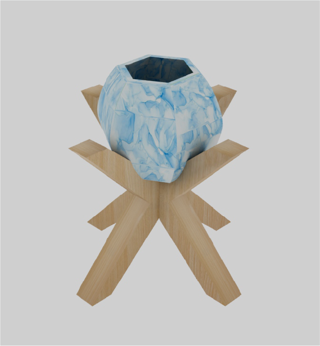
Render base y maceta
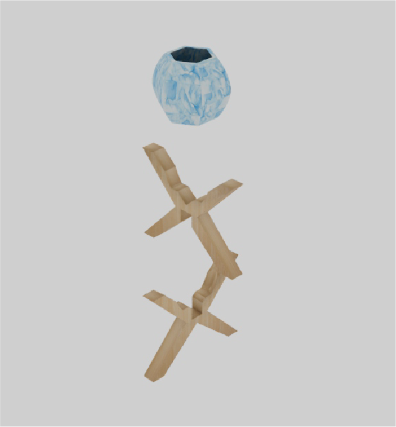
Render armado de la base
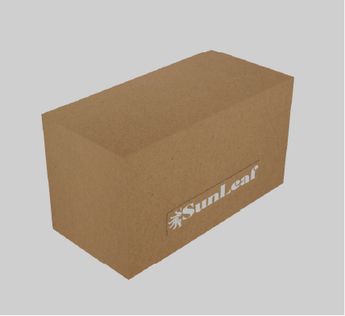
Render empaque
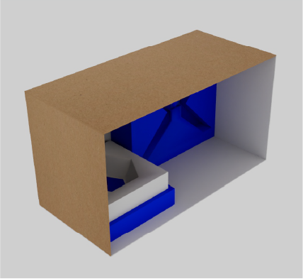
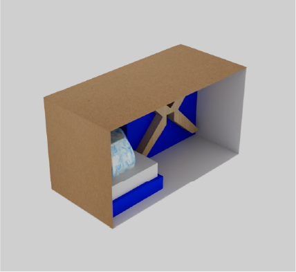
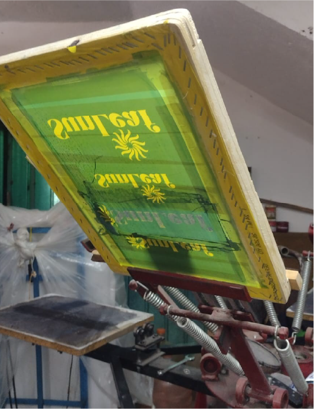
Serigrafía.
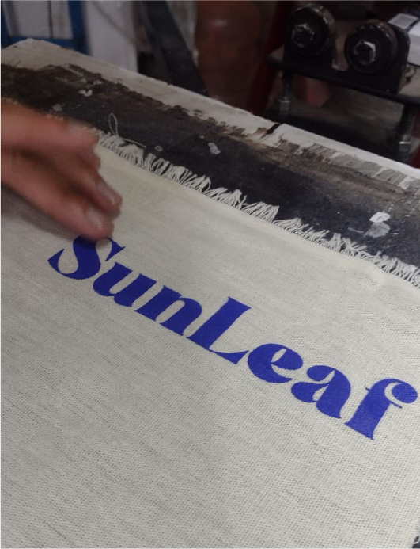
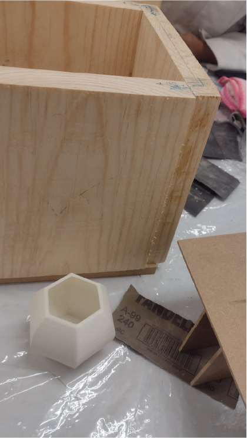
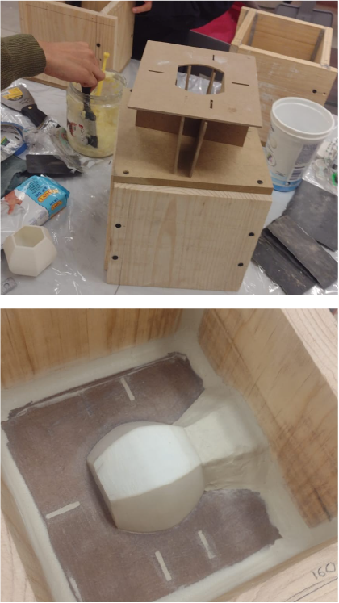
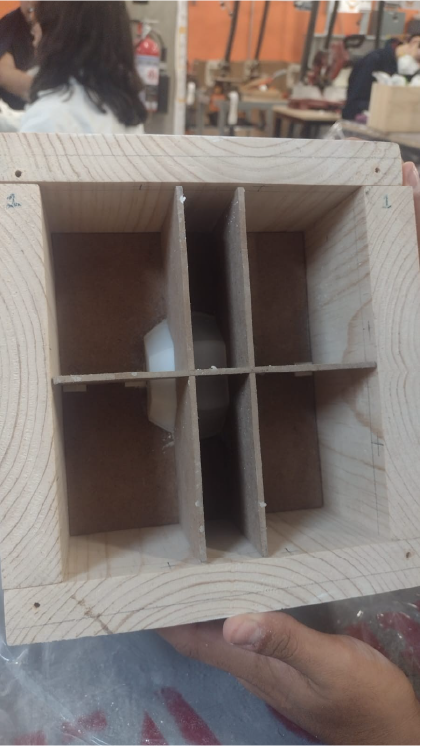
Moldes
Se creó una caja de contención en la que se vertió yeso cerámico. Dentro, se colocó la forma de mi maceta junto a un vertedero hecho de plastilina, lo que permitió que la barbotina fluyera y se formara la figura. De este modo, se puede reproducir la maceta en múltiples ocasiones, asegurando que todas las piezas sean idénticas.
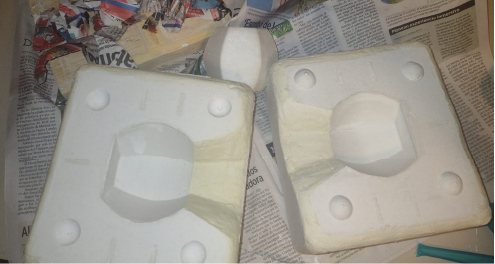
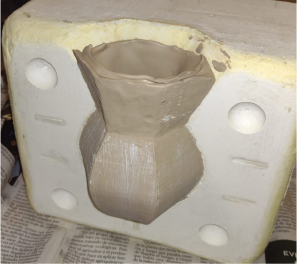
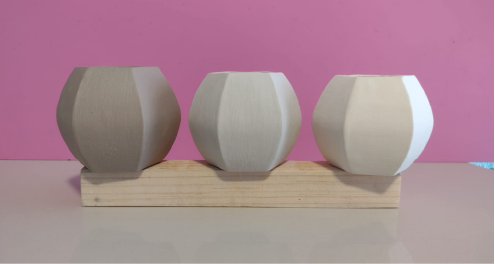
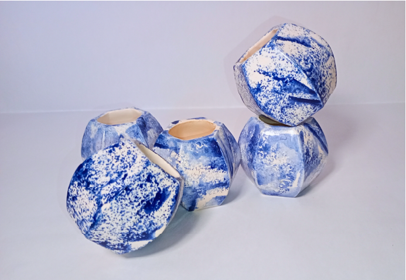
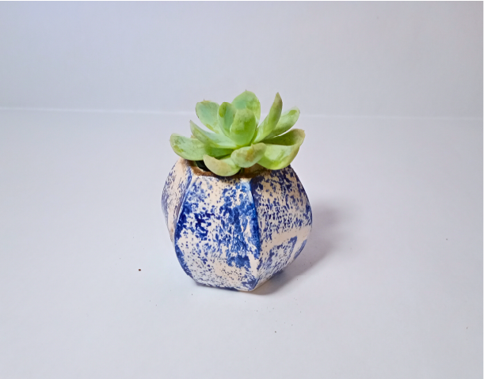
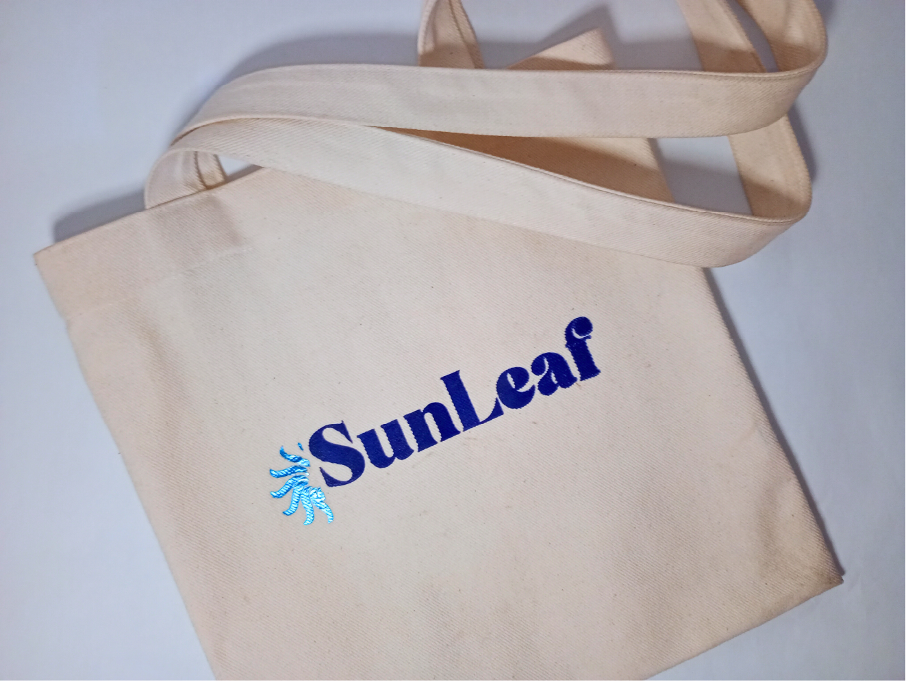
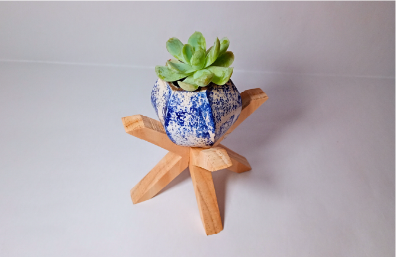
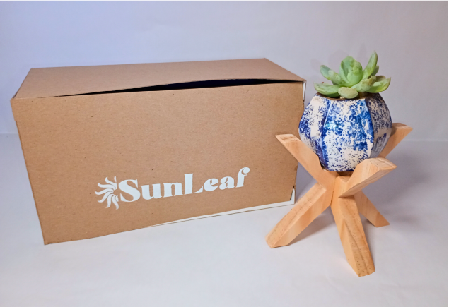
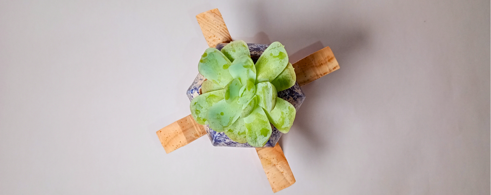
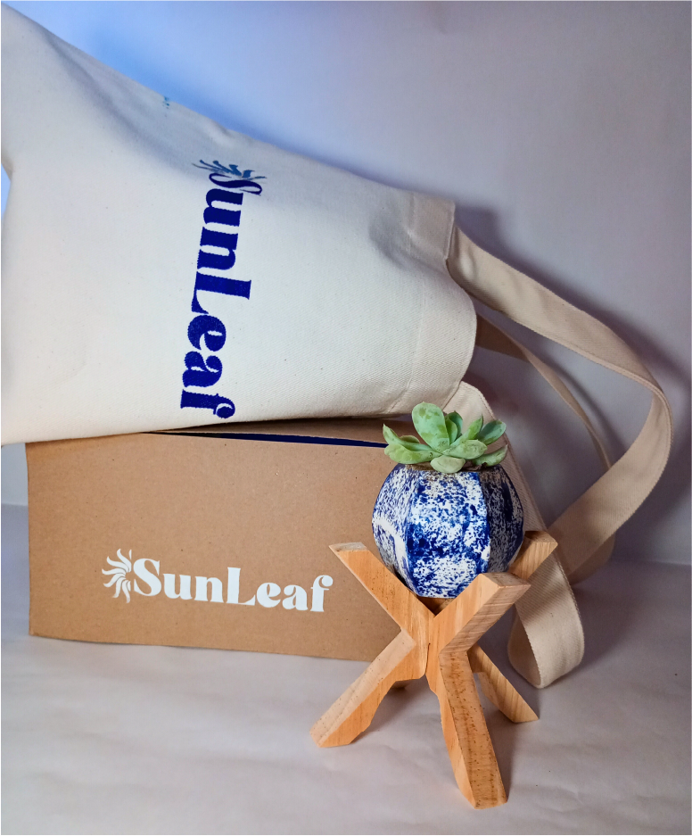